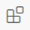
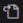

TeX Live を使わずに LaTeX 環境を作る！
TinyTeX を使って R 環境以外でも \(\LaTeX\) を使えるようにしよう！
はじめに
こんにちは、Windows ユーザーです。
TeX Live はインストールするのが面倒だし、使い方もよくわからないので1、別の方法で\(\LaTeX\) を使えるようにしました。
また、Mac での方法も併せてご紹介します。
これまで TeX Live に苦労していた方や Overleaf を使っていた方は、ぜひ試してみてください。
作業手順
前提として、VSCodeはインストールされているとします。もしまだの方はこちらを参考にインストールしてください2。
0. WSL, Ubuntu と Homebrew の準備
Windows のローカルでもできるとは思うのですが、Ubuntu でやる方が楽なので、WSL2 を使って Ubuntu でやります。何言ってるかわからない方は、気にしないでください。僕もよくわかりません。
事前準備は少し面倒だけど、一度やってしまえば楽、みたいなイメージで使っています。とりあえず使えればよいと思っている一大学院生なので、そのあたりは許してください。
Mac の方は、Homebrew を使って TinyTeX をインストールしていきます。
既にこれらの準備が出来ている方は、飛ばしてください。
0-1. WSL と Ubuntu のインストール（Windows）
まずは Windows Subsystem for Linux（WSL）をインストールします3。
PowerShell を管理者権限で起動4し、以下のコマンドを実行します。
wsl --installもし再起動を求められたら、再起動してください。インストールはこれだけです。
インストールができたらユーザー名とパスワードの設定が求められるので、設定します。
これは何でも構いません。sudo コマンドを使う際にパスワードが必要になりますが、本当に簡単なもので大丈夫です5。
また、パスワード入力の際に、入力しても画面上には表示されませんが、きちんと入力されていますので慌てず続けてください。
0-2. Homebrew のインストール（Mac）
Mac ユーザーは Homebrew を使って諸々インストールしていくので、まだの方はここでインストールしてください。
ターミナルを開く
- アプリ一覧から「ターミナル」を探してください。
以下のコマンドを入力して実行
- パスワードを求められるので、入力してください。
Terminal
/bin/bash -c "$(curl -fsSL https://raw.githubusercontent.com/Homebrew/install/HEAD/install.sh)"1. TinyTeX のインストール
TeX Live はインストールが面倒なので、TinyTeX という軽量な \(\LaTeX\) ディストリビューションを使います。R Markdown でもよく使われているので、馴染みがある方も多いかもしれません。
しかし今回は、R は使いません。目標とするのは TeX Live の代替として、簡潔に \(\LaTeX\) を使えるようにすることです。
1-1. Windows でのインストール
Windows では、Ubuntu を開いて以下のコマンドを実行します。
wget -qO- "https://yihui.org/tinytex/install-bin-unix.sh" | shこれで TinyTeX のインストールは完了です。簡単ですね。
1-2. Mac でのインストール
Mac の方は、ターミナルを開いて以下のコマンドを実行してください。
curl -sL "https://yihui.org/tinytex/install-bin-unix.sh" | sh2. VSCode での設定
2-1. 拡張機能のインストール
VSCode で LaTeX を使うためには、拡張機能をインストールする必要があります。
画面左の拡張機能アイコン  をクリックし、検索バーに「LaTeX」と入力します。すると、LaTeX および LaTeX Workshop という拡張機能が表示されるので、2つをインストールします6。
2-2. 設定の変更
拡張機能をインストールしたら、設定を変更します。
画面左下の管理ボタンから「設定」で設定画面を開き7、右上にある  をクリックして settings.json を開きます。
以下の {} の中身を設定に追加します。もし既に何か設定がある場合は、最後をカンマで区切り、改行して追加してください。
{
"latex-workshop.latex.tools": [
{
"name": "latexmk",
"command": "latexmk",
"args": [
"-synctex=1",
"-interaction=nonstopmode",
"-file-line-error",
"-xelatex",
"%DOC%"
]
}
],
"latex-workshop.latex.recipes": [
{
"name": "latexmk (xelatex)",
"tools": [
"latexmk"
]
}
],
"latex-workshop.view.pdf.viewer": "tab",
"latex-workshop.latex.clean.fileTypes": [
"*.aux", "*.bbl", "*.blg", "*.idx", "*.ind", "*.lof", "*.lot", "*.out", "*.toc", "*.acn",
"*.acr", "*.alg", "*.glg", "*.glo", "*.gls", "*.ist", "*.fls", "*.log", "*.fdb_latexmk", "*.synctex.gz",
// for Beamer files
"_minted*", "*.nav", "*.snm", "*.vrb",
],
"latex-workshop.latex.autoBuild.run": "onBuilt",
}これで設定は完了です。
3. 動作確認
ここからは Windows も Mac も共通です。
はじめに今回使うフォントをインストールしましょう。VSCode のターミナルで以下のコマンドを実行してください。
tlmgr install ipaex次に、VSCode で新しいファイルを作成し、GitHub Copilot が作ってくれた以下のコードを回してみます8。
\documentclass{article}
\usepackage{bookmark}
\usepackage{fontspec}
\usepackage{zxjatype}
\usepackage[ipaex]{zxjafont}
\title{サンプルドキュメント}
\author{あなたの名前}
\date{今日の日付}
\begin{document}
\maketitle
\section{導入}
これはサンプルのセクションです。
\subsection{サブセクション}
これはサンプルのサブセクションです。
\end{document}これを保存し、右上の緑の三角ボタン をクリックすると、PDF ファイルが生成されます。
しかし、おそらくここでエラーに直面するでしょう。次のセクションでエラーの解決法について説明します。
4. エラーの解決
この段階のエラーのほとんどは、パッケージがインストールされていないことが原因です。
コンパイルすると右下にエラーの表記とともに「Open compiler log」と出ると思うので、それをクリックしてエラーログを開きます。
エラーログを少し遡ってみると、どのパッケージがインストールされていないかがわかります。例えば、「! LaTeX Error: File ‘xltxtra.sty’ not found.」と出た場合、xltxtra パッケージがインストールされていないことがわかります。
その場合、ターミナルに戻り以下のコマンドを実行してください。
tlmgr install xltxtraこれでインストールできますが、使い始めのうちは何度か似たようなエラーが出るかもしれません。エラーが出たらエラーログを見て、同様の方法で必要なパッケージをインストールしてください。
先ほどのサンプルコードを実行しようとすると、
! LaTeX Error: File `xeCJK.sty’ not found.
というエラーが途中で出てきます。しかし、tlmgr install xeCJK としてもインストールできません。これは、xeCJK というパッケージが存在しないためです。
代わりに、ctex パッケージをインストールすることで解決できます。ctex パッケージが xeCJK を含んでいるためです。
ややこしいですが、これで試してみてください。
5. 再び動作確認
エラーを解消するうちに、足りないパッケージがインストールでき、最終的には問題なくコンパイルできるようになるはずです。
日本語で使う場合、フォントをインストールしていないミスが多いので、気を付けてください。
最終的に次のように出力できました。

おわりに
以上で、TeX Live を使わずに \(\LaTeX\) 環境を作る方法を紹介しました。
TinyTeX は、R 上だと必要なパッケージが自動でインストールされる9ので、それに比べるとやや不便ですが、簡潔に \(\LaTeX\) を使えるようになるので、一度試してみる価値はあると思います。
TeX Live や VSCode の設定に苦心している方は、ぜひ試してみてください。
また、何かエラー等ありましたらコメントでお知らせください。